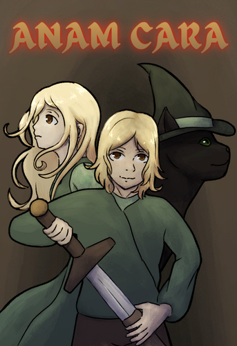

Anam Cara is a 2.5D historical fantasy co-op game where you play as two teenage siblings in a world shaped by witch trials, paranoia and dark experimentation. Players take control of the impulsive swordsman Wilfred and his magically gifted sister Winifred, whose spirit possesses creatures and objects from the form of a black cat. By combining two completely different playstyles, players must solve environmental puzzles, defeat monstrous creatures and uncover the truth behind their village and themselves.